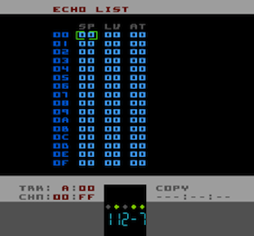

Echo List Page
Tracks A. B & D can make use of the Auto Echo effect. This is the same Auto Echo that I invented and implemented in both NTRQ and Nijuu - it uses an algorithm to produce a single-voice-echo effect without the need for manually inserting echo notes into your Patterns. It's not only good a simulating single-voice-echo but is quite an effective creative tool in it's own right. Also because it requires no additional manual calculation of where to place echo notes, it can also produce echo effects that would be near impossible to do by hand.
Like Envelope and Vibrato, Echo refers to an Echo Object in Pulsar. The Echo List has numbers down the left-hand side that are the object numbers you would specify in the Instrument ECHO parameter and also in the Echo Command (Yxx). Each row of the Echo List is one Echo Object comprising three parameters.
From left-to-right those parameters are:
|
specifies the Echo feedback speed. The value is the number of ticks/frames between each attenuation of the Echo signal. The lower the number, the shorter the echo delay |
|
specifies the initial attenuation of the Echo signal when it is fed back into the audio output. It is a scaling value from 00 - 0F where 00 is silent and 0F is full volume |
|
specifies the speed that the Echo signal decays over time. The value is simply subtracted from the current Echo amplitude at a frequency determined by the Echo Speed (SP) until the Echo amplitude is zero. A value of 00 would mean the Echo would technically be infinite. Maximum value in practicality is 0F but much smaller values are more useful |
Auto Echo Information
Taken from a post on my NTRQ.net blog.
Some people have asked why the sounds... are short and if that's the only way the echo can work? It is true that the effect is quite dependent on the length of time a note is playing for or more specifically, it's the gaps in between the notes that are important - because it's only using a single voice, the echo signal has to have somewhere to go! For example, if you have a totally legato sound with no audible gaps in between the notes, you won't get any echo sound. So to get the best out of the echo (or the most obvious effect out of it) it's best to make sure there's plenty of silence in between notes. Of course, you can also have a fast run of notes with a gap at the end and the echo will reflect what has just been played, just as it does with single notes (depending of course on the Echo Speed of your current Echo patch).
Pulsar's Echo engine has two phases. One when it is 'recording' and the other when it is 'playing' echo. It constantly monitors the Amplitude Envelope of the voice while 'recording' the voice output and waits for a gap where the Envelope is in the Release phase. At this point it decides that it's time to feed some of the 'recorded' audio back into the signal path, swapping back to 'recording' again when a new note is played. It constantly flips between the two modes depending on what is going on the in Pattern.